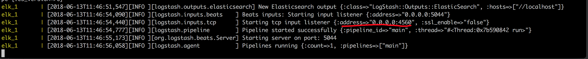

这是Spring Cloud上手系列的第十篇，代码放在GitHub上，随着本系列文章更新。
ELK简介
ELK是Logstash、ElasticSearch和Kibana的组合。Logstash处理日志的收集，ElasticSearch处理日志的检索，Kibana对日志进行可视化展示和查询。
在Spring Cloud微服务架构下可以使用ElasticSearch来存储两类信息：一类是通过Logstash收集的各个应用的日志，另一类是作为Zipkin的持久化存储。
Zipkin持久化
Zipkin本身支持采用ElasticSearch作为其存储引擎，它可以直接与ElasticSearch交互，将跟踪信息保存至ElasticSearch。
日志收集方式
微服务应用的日志则情况更复杂。ELK与Spring Cloud的集成有两种方式：
- 一种是各个微服务节点上部署Logstash实例。微服务输出日志时，按Logstash的需要输出为json格式。Logstash则监控这些日志目录，并将这些日志发送至ElasticSearch。由于Logstash是采用jruby实现的，fatjar有20M左右，并且它进行日志处理时候会消耗较多的cpu资源，会影响到微服务节点的性能，因此一般不建议采用此方案。

- 另一种方式是微服务节点上部署轻量化的日志收集器。通过日志收集器收集日志并转发至独立的Logstash节点。收集器的形式有很多种，可以直接使用Logger将日志转发给Logstash（这篇文章里我们使用这种方式），也可以使用轻量化的日志收集器Filebeat、rsyslog等。

准备ELK环境
为测试方便，我们使用Docker来运行ELK镜像，这里不直接使用ELK官方镜像。官方镜像的E L K各个组件是独立的。为了测试方便，我们使用集成了ELK三个组件的像。
- 安装ELK镜像
docker pull sebp/elk
- 顺便将rabbitmq也换成Docker方式运行
docker pull rabbitmq:3-management
因为我们要访问rabbitmq的控制台，所以要安装3-management，rabbitmq镜像不带插件。
- 编写
docker-compose.yml配置文件
在根模块的support/docker目录下新建docker-compose.yml配置文件，内容如下：
```yaml elk: image: sebp/elk ports: - "5601:5601" - "9200:9200" - "5044:5044"
rabbitmq: image: rabbitmq:3-management ports: - "15672:15672" - "5672:5672" - "5673:5673" - "4369:4369" - "25672:25672" ```
- 在这个目录下执行
docker-compose up启动容器。
之后可以从本机的15672、9200、5601分别看到RabbitMQ、ElasticSearch、Kibana的相关信息：


ELK与Zipkin集成
上一篇文章中使用Zipkin进行调用链的跟踪。各个服务的调用信息通过RabbitMQ传递至Zipkin服务。默认情况下这些信息是保存在内存中的，并没有进行持久化。我们可以将ELK中的ElasticSearch来存储Zipkin服务接收的数据。
添加依赖
在根模块的build.gradle中添加io.zipkin.java:zipkin-autoconfigure-storage-elasticsearch-http依赖：
//zipkin服务端
"zipkin-server":"io.zipkin.java:zipkin-server",
"zipkin-server-ui":"io.zipkin.java:zipkin-autoconfigure-ui",
"zipkin-server-rabbit":"io.zipkin.java:zipkin-autoconfigure-collector-rabbitmq:2.3.1",
"zipkin-server-elasticsearch":"io.zipkin.java:zipkin-autoconfigure-storage-elasticsearch-http:2.3.1",
向zipkin模块的build.gradle中添加该依赖：
dependencies {
//ZipKin服务
compile libs.'zipkin-server'
compile libs.'zipkin-server-ui'
compile libs.'zipkin-server-rabbit'
compile libs.'zipkin-server-elasticsearch'
}
修改配置
在zipkin模块的application.yml中添加存储配置：
zipkin:
collector:
rabbitmq:
addresses: localhost:5672
password: guest
username: guest
queue: zipkin
storage:
type: elasticsearch
elasticsearch:
cluster: elasticsearch
hosts: http://localhost:9200
index: zipkin
index-shards: 5
index-replicas: 1
构建和测试
重新构建zipkin模块并重新运行。再次访问http://localhost:9000/api/consumer/hello?name=dfdsdsds产生一些跟踪数据。再访问http://localhost:5601的Kibana控制台，就能看到zipkin产生的数据了。

ELK日志收集
接下来我们配置各个应用的日志转发功能，将日志信息保存至ELK。
Spring Boot应用默认使用logback来记录日志。Logstash有针对logback的支持，可以直接在logback中增加Logstash的Appender就可以将日志转化为JSON并存储至ElasticSearch。
添加依赖
在根模块的build.gradle的ext.libs中添加logstash依赖:
//logstash
"logstash":"net.logstash.logback:logstash-logback-encoder:4.6"
将该依赖添加至service、gateway应用中：
// service 和 gateway 工程的依赖，zipkin 客户端
if(name=='service'||name=='gateway') {
dependencies {
compile libs.'zipkin-client'
compile libs.'spring-rabbit'
compile libs.'logstash'
}
}
增加配置
我们以consumer:service模块为例。在resources目录下增加logback-spring.xml，内容如下：
<?xml version="1.0" encoding="UTF-8"?>
<configuration>
<appender name="LOGSTASH" class="net.logstash.logback.appender.LogstashTcpSocketAppender">
<destination>localhost:4560</destination>
<encoder charset="UTF-8" class="net.logstash.logback.encoder.LogstashEncoder"/>
</appender>
<include resource="org/springframework/boot/logging/logback/base.xml"/>
<root level="INFO">
<appender-ref ref="LOGSTASH"/>
<appender-ref ref="CONSOLE"/>
</root>
</configuration>
这里配置为将日志发送至localhost:4560，我们希望这个端口是Logstash的日志收集端口。由于我们使用的ELK镜像并没有开放这个端口，因此我们需要对docker-compose.yml稍做调整，让它加载我们自己的配置文件。
从ELK镜像的GitHub上查看源码，可以看到镜像开放了5044作为Filebeat日志收集端口。但是在我们简单的验证环境上用不上，我们希望在4560开放Logstash的日志收集端口。查看镜像源码可以看到30-output.conf配置文件，这个文件只配置了output，将这个文件复制到support/docker/elk-30-output.conf，并添加input配置，开放logstash日志收集端口。
input {
tcp {
port => 4560
codec => json_lines
}
}
output {
elasticsearch {
hosts => ["localhost"]
manage_template => false
index => "%{[@metadata][beat]}-%{+YYYY.MM.dd}"
document_type => "%{[@metadata][type]}"
}
}
调整docker-compose.yml，让ELK容器加载我们的配置文件。
elk:
image: sebp/elk
ports:
- "5601:5601"
- "9200:9200"
- "5044:5044"
- "4560:4560"
volumes:
- ./elk-30-output.conf:/etc/logstash/conf.d/30-output.conf
rabbitmq:
image: rabbitmq:3-management
ports:
- "15672:15672"
- "5672:5672"
- "5673:5673"
- "4369:4369"
- "25672:25672"
重新运行docker-compose up。在docker控制台能看到4560端口的监听信息：

构建并运行
在根模块下重新构建consumer:service模块并运行。
进入Kibana控制台的Management -> Index Patterns可以看到产生了新的索引信息：

图中的%{[@metadata][beat]}-2018.06.13与elk-30-output.conf中output段的配置是对应的。创建完索引后，在Kibana控制台的Discover界面上，就能看到consumer:service产生的日志了。

Comments